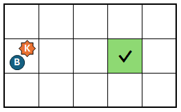

(8 poin) Konfigurasi awal papan berbentuk sebagai berikut:

Perhatikan bahwa konfigurasi ini juga digunakan untuk contoh interaksi di bawah.
AKSELERASI T di awal membuat setiap petak berisi paling banyak $1$ mikroba.Bu Dengklek bekerja di sebuah laboratorium untuk meneliti kualitas air sungai Ciliwung. Bu Dengklek mengambil sampel air sungai Ciliwung dan menempatkannya di papan kaca. Papan kacanya berbentuk persegi panjang yang terdiri atas petak-petak persegi yang tersusun dalam $N$ baris (dinomori $1$ hingga $N$ dari atas ke bawah) dan $M$ kolom (dinomori $1$ hingga $M$ dari kiri ke kanan). Uniknya, $N$ dan $M$ merupakan dua bilangan prima berbeda. Kita notasikan petak yang berada di baris $r$ dan kolom $c$ sebagai petak $(r, c)$.
Terdapat dua jenis mikroba: mikroba-K dan mikroba-B. Mula-mulanya, terdapat setidaknya satu mikroba pada keseluruhan papan kaca. Diketahui pula bahwa untuk setiap petak, dijamin terdapat maksimum $1$ mikroba-K dan maksimum $1$ mikroba-B. Dijamin pula bahwa ada setidaknya satu petak tanpa mikroba sama sekali.
Bu Dengklek ingin mengambil seluruh mikroba dari papan. Namun, Bu Dengklek tidak tahu konfigurasi mikroba di papannya. Bu Dengklek dapat menggunakan mikroskopnya untuk mengobservasi papannya. Observasi ini menghasilkan matriks $A$ berukuran $N \times M$ yang setiap elemennya bernilai $0$ atau $1$. Jika $A_{i,j} = 0$, maka tidak ada mikroba sama sekali pada petak $(i, j)$. Jika $A_{i,j} = 1$, maka ada setidaknya satu mikroba pada petak $(i, j)$.
Pada awalnya, Bu Dengklek mengobservasi papan kacanya. Selama masih ada mikroba pada papan kaca, Bu Dengklek dapat melakukan dua jenis operasi berikut:
AKSELERASI T (dengan $1 \leq T \leq 1000$) —
Bu Dengklek akan mempercepat laju seluruh mikroba selama $T$ satuan waktu.
Yang terjadi adalah sebagai berikut:
EKSPERIMEN X Y (dengan $1 \leq X \leq N$ dan $1 \leq Y \leq M$) —
Bu Dengklek meneliti sampel air pada petak $(X, Y)$ yang harus berisi setidaknya satu mikroba.
Dengan ini, Bu Dengklek akan mendapatkan informasi tentang banyaknya mikroba pada petak $(X, Y)$.
Setelah itu, seluruh mikroba pada petak tersebut akan diambil dari papan.
Baca penjelasan contoh interaksi untuk lebih jelasnya.
Bu Dengklek harus melakukan operasi-operasi tersebut dengan urutan apa pun, sampai tidak ada mikroba lagi pada papan kaca.
Karena cukup menyita banyak waktu untuk melakukan AKSELERASI, Bu Dengklek hanya boleh melakukan AKSELERASI paling banyak $1000$ kali.
Di sisi lain, Bu Dengklek juga tidak boleh sembarangan dalam bereksperimen. Suatu eksperimen dikatakan sukses apabila terdapat tepat $1$ mikroba pada petak yang dieksperimen, karena jika ada lebih dari $1$ mikroba, data mikroba bisa saja tercampur.
Pada akhirnya, Bu Dengklek akan diberi nilai yang bergantung pada seberapa akurat dan efisien operasi-operasi yang dia lakukan, seperti yang akan dijelaskan pada bagian penilaian. Bantulah Bu Dengklek untuk mendapatkan nilai setinggi-tingginya!
(8 poin) Konfigurasi awal papan berbentuk sebagai berikut:
Perhatikan bahwa konfigurasi ini juga digunakan untuk contoh interaksi di bawah.
AKSELERASI T di awal membuat setiap petak berisi paling banyak $1$ mikroba.Soal ini bertipe "interaktif". Pada soal ini, Anda akan berinteraksi dengan program penguji melalui masukan standar (stdin) dan keluaran standar (stdout). Perhatikan interaksi di bawah ini dengan saksama.
Awalnya, Anda akan diberikan nilai $N$, $M$, dan hasil observasi awal papan $A$ dalam format berikut:
N M A1,1A1,2…A1,N A2,1A2,2…A2,M ⋮ ⋱ ⋮ AN,1AN,2…AN,M
Untuk melakukan operasi AKSELERASI untuk suatu nilai $T$ ($1 \leq T \leq 1000$), Anda bisa menghasilkan keluaran dalam format berikut:
AKSELERASI T
Untuk setiap keluaran tersebut, hasil observasi papan $A$ setelah operasi akan diberikan melalui masukan dengan format berikut:
A1,1A1,2…A1,N A2,1A2,2…A2,M ⋮ ⋱ ⋮ AN,1AN,2…AN,M
Untuk melakukan operasi EKSPERIMEN untuk suatu petak $(X, Y)$ ($1 \leq X \leq N$; $1 \leq Y \leq M$) yang berisi setidaknya satu mikroba, Anda bisa menghasilkan keluaran dalam format berikut:
EKSPERIMEN X Y
Untuk setiap keluaran tersebut, hasil eksperimennya akan diberikan melalui masukan dengan format berikut:
Z
Ini berarti, terdapat $Z$ mikroba pada petak $(X, Y)$.
Tepat ketika sudah tidak ada lagi mikroba pada papan, interaksi program Anda dan program juri harus langsung diberhentikan. Anda tidak boleh berhenti jika masih ada mikroba pada papan.
Bu Dengklek memperhitungkan dua nilai, yakni $\text{AKURASI}$ dan $\text{EFISIENSI}$.
AKSELERASI sesedikit mungkin.
Jika $\text{ACC}$ menyatakan banyaknya operasi AKSELERASI yang dilakukan Bu Dengklek, maka nilai $\text{EFISIENSI}$ ditentukan berdasarkan tabel berikut:
| Kondisi | $\text{EFISIENSI}$ |
|---|---|
| $1000 < \text{ACC}$ | $0\%$ |
| $9 < \text{ACC} \leq 1000$ | $(100 - 5 \times \log_2(\text{ACC} - 8))\%$ |
| $\text{ACC} \leq 9$ | $100\%$ |
Nilai $\text{PERFORMA}$ Bu Dengklek pada akhirnya adalah perkalian antara keduanya: $\text{PERFORMA} = \text{AKURASI} \times \text{EFISIENSI}$. Sebagai permisalan, jika Bu Dengklek memiliki nilai $\text{AKURASI}$ $80\%$ dan nilai $\text{EFISIENSI}$ $75\%$, maka nilai $\text{PERFORMA}$ Bu Dengklek adalah $80\% \times 75\% = 60\%$.
Untuk setiap kasus uji, program akan dinilai $\text{PERFORMA}$-nya. Setiap subsoal terdiri dari beberapa kasus uji. Untuk setiap subsoal, akan diambil nilai $\text{PERFORMA}$ yang paling kecil. Poin yang didapat untuk suatu subsoal adalah nilai $\text{PERFORMA}$ terkecil tersebut dikalikan dengan poin subsoal. Nilai akhir adalah jumlah nilai semua subsoal, yang kemudian dibulatkan ke bawah.
Program Anda mungkin mendapat "Wrong Answer" atau "Time Limit Exceeded" jika:
AKSELERASI sebanyak lebih dari $1000$ kali,Jika suatu kasus uji berhasil dijalankan, Anda bisa melihat penilaiannya secara detail di halaman pengumpulan. Anda bisa melihat nilai $\text{AKURASI}$, $\text{EFISIENSI}$, dan $\text{PERFORMA}$ untuk kasus uji tersebut.
Grader tidak adaptif. Dengan kata lain, konfigurasi mikroba sudah ditentukan sebelum interaksi dimulai.
Berikut adalah sebuah contoh interaksi yang mungkin dengan suatu konfigurasi papan tertentu. Perhatikan bahwa informasi konfigurasi papan ini tidak diketahui oleh program Anda dan hanya ditampilkan untuk membantu memahami contoh interaksi.
| Masukan | Keluaran | Konfigurasi Papan |
|---|---|---|
3 5 10011 00101 10101 |
|
|
AKSELERASI 1 |
||
11001 10011 10010 |

|
|
AKSELERASI 1 |
||
10100 11001 11011 |

|
|
EKSPERIMEN 2 5 |
||
1 |

|
|
EKSPERIMEN 3 5 |
||
2 |

|
|
EKSPERIMEN 1 1 |
||
1 |

|
|
AKSELERASI 4 |
||
11010 10000 10000 |

|
|
EKSPERIMEN 3 1 |
||
2 |
||
AKSELERASI 1000 |
||
01000 10010 00000 |
||
EKSPERIMEN 1 2 |
||
1 |
||
EKSPERIMEN 2 4 |
||
1 |
 | |
EKSPERIMEN 2 1 |
||
2 |
||
| (selesai) | (selesai) |
Pada contoh di atas, Bu Dengklek berhasil melakukan $4$ buah eksperimen sukses. Totalnya, ada $10$ mikroba di papan pada awalnya. Sehingga $\text{AKURASI}$ Bu Dengklek adalah: $\left(\frac{4}{10}\right)^3 \times 100\% = 6.4\%$.
Bu Dengklek melakukan $4$ kali operasi AKSELERASI.
Untuk menghitung $\text{EFISIENSI}$, bisa didapatkan dari tabel bahwa karena banyaknya operasi AKSELERASI yang dilakukan tidak lebih dari $9$, maka nilai $\text{EFISIENSI}$-nya $100\%$.
Pada akhirnya, nilai $\text{PERFORMA}$ Bu Dengklek adalah perkalian keduanya, yakni: $\text{PERFORMA} = \text{AKURASI} \times \text{EFISIENSI} = 6.4\% \times 100\% = 6.4\%$.
Selalu lakukan flush setiap kali setelah program Anda mengeluarkan keluaran.
stdio.h (cstdio):
fflush(stdout);
iostream:
std::cout << std::flush;